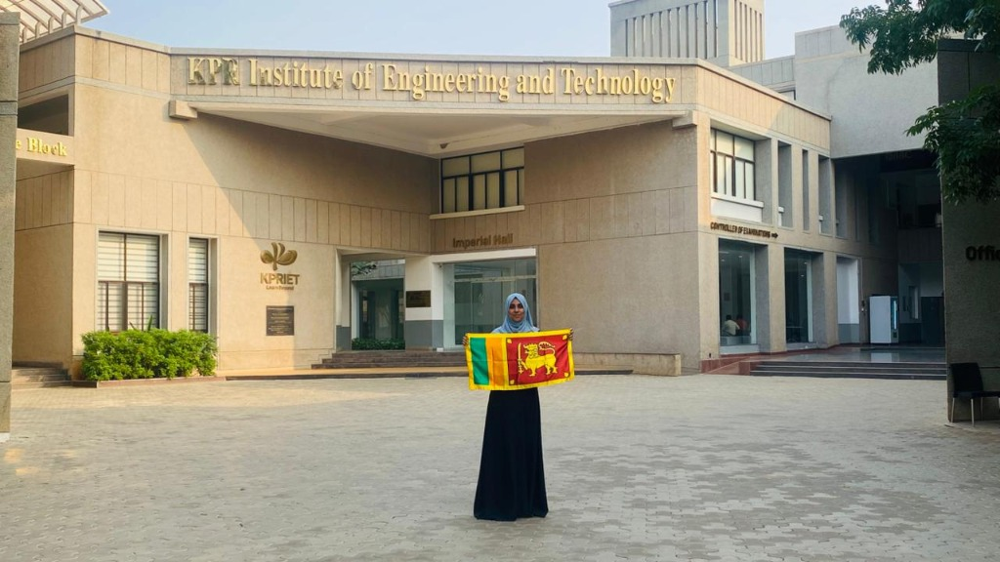
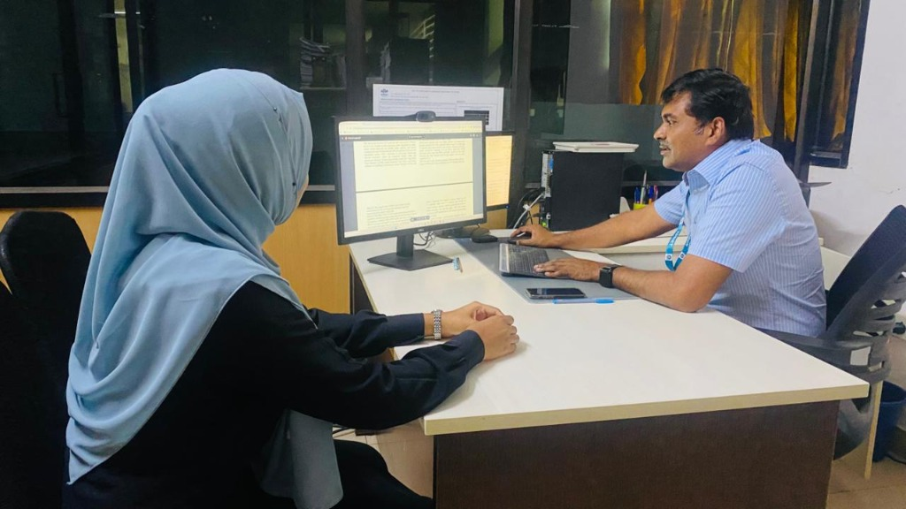

I build modern, responsive, and easy-to-use web and mobile applications using modern frontend, backend, and cloud tools. I enjoy solving real-world problems with clean code, modular architecture, and automated deployments.
A quick look at my background, university studies, and practical focus.
I am an Information Technology undergraduate at Horizon Campus in Sri Lanka, specializing in Network & Mobile Computing.
I love turning ideas into real, working software—whether that is building native Android apps with Kotlin, full-stack web platforms with modern JavaScript, or setting up automated deployment pipelines with Docker and GitHub Actions.
Recently, I completed a 6-week international research internship in India at KPR Institute of Engineering and Technology, where I worked in the Network Security & Cloud Lab on machine learning models to protect smart vehicles against cyber-attacks.
EducationBIT (Hons) in Network & Mobile Computing
Main FocusFull-Stack Web, Android (Kotlin) & DevOps
LocationSri Lanka
Current StatusOpen to 2026 Internship Opportunities
Skills & Tools
My Tech Stack
Technologies and tools I have actively used to build real projects.
An AI intrusion detection model built for Connected & Autonomous Vehicles to detect fake GPS signals and sensor tampering attacks in real time.
What I Built: A hybrid deep learning autoencoder (CNN + Bidirectional GRU) that models normal sensor telemetry and flags attacks when data deviates.
What I Implemented: Achieved 90% detection accuracy on sensor test data, validating loss convergence at epoch 44 and peak accuracy at epoch 48.
Academic Result: Co-authored a full research paper submitted to an international computing conference for peer review.
PythonTensorFlowCNNBiGRUAutoencoder
Seeking Intern Roles
Roles I Am Qualified For
Based on my degree in Network & Mobile Computing, research lab experience, and engineering projects, here is how my skills match the 15 internship roles:
Network Engineering Intern
Top Match
Typically Works With:
Routing, switching, VLANs, TCP/IP, troubleshooting
What I Bring: Core degree in Network & Mobile Computing; hands-on knowledge of TCP/IP, packet analysis with Wireshark, routing protocols, and subnetting.
DevOps Intern
Top Match
Typically Works With:
Linux, Git, CI/CD, Docker, cloud infrastructure
What I Bring: Built automated GitHub Actions CI/CD pipelines for Spendify, Docker containerization, team Git branching (main/develop/feature), and Vercel cloud hosting.
Network Operations Intern (NOC)
Top Match
Typically Works With:
Monitoring, incidents, network troubleshooting
What I Bring: Telemetry monitoring, traffic log analysis, incident tracking workflows, and network diagnostics from coursework and research lab experiments.
Network Security Intern
Top Match
Typically Works With:
Firewalls, VPNs, IDS/IPS, network security
What I Bring: 6 weeks in the Network Security & Cloud Lab at KPR IET; built an intrusion detection model reaching 90% accuracy; Certified in Cyber Security (2024).
Mobile Network Intern
Top Match
Typically Works With:
Cellular networks, radio/network infrastructure
What I Bring: Specialization in Mobile Computing, understanding of cellular transmission principles, and connected vehicle telemetry networks.
Android Developer Intern
Top Match
Typically Works With:
Kotlin, Android Studio, UI architecture, APIs
What I Bring: Engineered Safe Ride LK with a 6-fragment modular navigation architecture in Kotlin, reusable ReportTypeAdapter, and Data Binding.
Software Engineering Intern
Top Match
Typically Works With:
JavaScript/Python, REST APIs, Git, databases
What I Bring: Full-stack development on Spendify, Python data pipelines, clean code reviews, Git version control, and relational database modeling.
Cloud Infrastructure Intern
High Fit
Typically Works With:
AWS/Azure, networking, IAM, cloud infrastructure
What I Bring: Experience deploying apps to Vercel, Docker containers, DNS setup, and distributed systems coursework.
Cybersecurity Intern
High Fit
Typically Works With:
Security monitoring, vulnerability assessment, SIEM
What I Bring: Certified in Cyber Security (2024); researched attack vectors on autonomous vehicles and anomaly detection thresholding.
SOC Analyst Intern
High Fit
Typically Works With:
Alerts, logs, incident investigation, SIEM
What I Bring: Trained in anomaly threshold detection, traffic log analysis, event reconstruction, and incident reporting flow design.
Wireless Network Intern
High Fit
Typically Works With:
Wi-Fi, wireless infrastructure, network troubleshooting
What I Bring: Wireless systems coursework, RF propagation basics, access point setup, and vehicle wireless communications research.
Telecommunications Intern
High Fit
Typically Works With:
Mobile networks, wireless, LTE/5G, network operations
What I Bring: Telecommunication systems theory, wireless transmission protocols, mobile computing architectures, and signal evaluation.
IT Infrastructure Intern
High Fit
Typically Works With:
Servers, networks, virtualization, infrastructure
What I Bring: Certified in Information Technology (2024); server configurations, containerized services, and multi-tier network topologies.
System Administration Intern
High Fit
Typically Works With:
Linux/Windows servers, Active Directory, user management
What I Bring: Linux command-line operations, shell scripts, environment configuration, package managers, and user permissions.
Information Security Intern
Foundational
Typically Works With:
Security controls, risk, vulnerability management
What I Bring: Security policies and threat model concepts, data privacy controls, and defensive programming practices (OWASP Top 10 awareness).
Penetration Testing Intern
Foundational
Typically Works With:
Security testing, vulnerability assessment, reporting
What I Bring: Attack surface identification, vulnerability assessment fundamentals, spoofing attack testing, and technical security reporting.
IT Support / Infrastructure Intern
Foundational
Typically Works With:
Hardware, networking, troubleshooting, IT operations
What I Bring: Hands-on hardware troubleshooting, network connectivity diagnostics, client/server configuration, and hardware architecture fundamentals.
Career & Studies
Work Experience & Education
My hands-on experience, university education, and leadership background.
Research Intern — Network Security & Cloud Lab
KPR Institute of Engineering and Technology (Coimbatore, India)
Selected via AIESEC Global Talent
Nov 10 – Dec 22, 2025 (Full-time)
Completed a 6-week full-time international research internship in India.
Trained a deep learning autoencoder (CNN + BiGRU) to detect cyber-attacks on smart vehicle sensors.
Reached 90% detection accuracy, validating model loss convergence at epoch 44 and peak accuracy at epoch 48.
Co-authored 2 research manuscripts submitted to international conferences.

Coimbatore, India
Representing Sri Lanka as an international research intern at KPR IET campus.

Network Security & Cloud Lab
Reviewing the smart vehicle anomaly detection research paper in the computer science lab.
PythonTensorFlowDeep LearningCybersecurity
Project Lead & Backend Developer
Academic Project Teams (Safe Ride LK & Spendify)
Dec 2025 – Mar 2026
Owned the 6-step incident reporting pipeline for the Safe Ride LK Android application in Kotlin.
Facilitated peer code reviews and maintained clean Git branching standards (main/develop/feature) for Spendify's automated CI/CD pipeline.
KotlinJavaScriptDockerCI/CD
Global Volunteer — Leadership Development
AIESEC • Certificate ID: 6989302
December 2025
Completed an intensive leadership program focused on cross-cultural collaboration, communication, and adaptability.
Coordinated international teams on deliverable milestones under tight schedules.
LeadershipTeamworkCross-Cultural Communication
BIT (Hons) in Network and Mobile Computing
Horizon Campus — Sri Lanka
Bachelor of Information Technology (Honours)
2023 – 2027 (Currently Reading)
Comprehensive degree program covering computer networks, wireless protocols, mobile systems development, cybersecurity, database systems, and software engineering.
Computer NetworksMobile ComputingSoftware EngineeringDatabase Systems
Services
What I Can Build
Practical engineering skills I bring to your team from day one.
Web Development
Fast, responsive websites and web applications built with clean HTML5, CSS3, modern JavaScript, and clean REST APIs.
Mobile Apps
Native Android apps built in Kotlin with clean fragment navigation, responsive layouts, and dynamic adapters.
DevOps & CI/CD
Automated testing workflows with GitHub Actions, Docker container setups, and reliable cloud deployments to Vercel.
Networking & Systems
Network setup, TCP/IP troubleshooting, packet analysis with Wireshark, and real-time sensor telemetry monitoring.
Achievements
Key Milestones & Certifications
Recognitions and verified credentials earned through hard work.
International Milestone
Research Residency in India
Selected through AIESEC Global Talent for a 6-week full-time international research residency at KPR Institute of Engineering and Technology (Coimbatore, India).
Academic Output
2 Research Papers Under Review
Co-authored 2 conference research manuscripts investigating sensor spoofing mitigation and deep learning anomaly detection in autonomous vehicles.
Empirical Results
90% AI Model Accuracy
Designed and validated a hybrid CNN + Bidirectional GRU autoencoder model that reliably detects spoofing attacks on connected vehicles.
Verified Technical Certifications
Introduction to Cyber Security (2026)
OpenLearn | The Open University (UK) • 24 CPD Points
Motivated IT undergraduate specializing in Network & Mobile Computing at Horizon Campus, actively seeking an internship in Software Engineering, Android Development, Backend Systems, or DevOps. Experience includes building modular native Android apps in Kotlin (Safe Ride LK), full-stack web apps with Docker and automated GitHub Actions CI/CD to Vercel (Spendify), and conducting a 6-week research internship in India at KPR Institute of Engineering and Technology on vehicle security.
TECHNICAL SKILLS
Programming Languages: Kotlin, Python, JavaScript (ES6+), SQL, Java, C
Mobile Development: Android SDK, Fragment Navigation, Data Binding, ConstraintLayout, ReportTypeAdapter